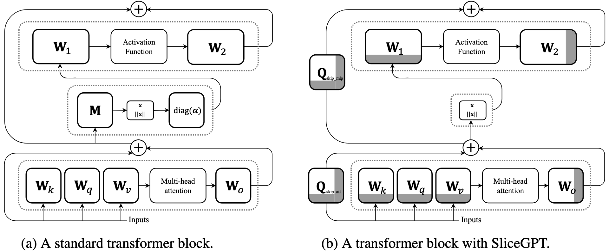

Bits-Back Coding as Error Correction with Side Information
Gergely Flamich
09/10/2024
gergely-flamich.github.io
In Collaboration With

Bits-back Coding
Error correction
Image from [1].
I will pick \(p(y \mid x)\) instead of assuming it is fixed.
Repetition code
can perfectly decode if
a puzzle
- source \(P\) over \(\Omega\)
- entropy code \(\mathtt{enc}_P: \Omega \to \{0, 1\}^*\)
If \(X \sim P\), then \(\mathtt{enc}_P(X) \sim ?\)
the "solution"
- \(\mathbb{E}[\lvert\mathtt{enc}_P(X)\rvert] \approx \mathbb{H}[X]\)
- \(\mathbb{H}[\mathtt{enc}_P(X)] = \mathbb{H}[X]\)
\(\therefore \mathtt{enc}_P(X) \stackrel{approx}{\sim} \mathrm{Bern}(1/2)^{\otimes \mathbb{H}[X]}\)
invertible sampling
- extend \(\mathtt{enc}_P: \{0, 1\}^* \times \Omega \to \{0, 1\}^*\)
- \(\mathtt{enc}_P^{-1} = \mathtt{dec}_P\)
- let \(m = (b_1, b_2, \dots), \quad b_i \sim \mathrm{Bern}(1/2)\)
If \(m', X' \gets \mathtt{dec}_P(m)\), what is \(X' \sim ?\)
\(X' \sim P\)!
bits-back coding
Error correction: For source \(P_X\) design \(P_{Y \mid X}\)
Encoding, given \(m\) and \(X \sim P_X\):
- Decode: \(m', y \gets \mathtt{dec}_{\color{red} P_{Y \mid X}}(m)\)
- Encode: \(m'' \gets \mathtt{enc}_{\color{blue} P_{Y}}(m', y)\)
Decoding, given \(m''\):
- Decode: \(m', y \gets \mathtt{dec}_{\color{blue} P_{Y}}(m'')\)
- Error correction: recover \(x\) from \(y\)
- Encode: \(m \gets \mathtt{enc}_{\color{red} P_{Y \mid X}}(m', y)\)
bits-back coding efficiency
What have we gained?
Warm-up: ANS
ANS - Asymmetric Numeral Systems [2, 3]
- \(x \in \{0, 1, 2\}\)
- \(P_X(x) = \frac{|\mathfrak{z}(x)|}{n}\)
Set \((Y \mid X=x) \sim \mathrm{Unif}(\mathfrak{z}(x))\)
Case study 1: unordered data
Have:
Want to encode:
Shuffle coding [4]
Idea: canonical representative \(\leftrightarrow\) equivalence class ("sorting")
Case study 2: rotational symmetries in LLMs [5]
\(f(x \mid W) = f(x \mid QW)\)
SVD: error correction for matrices
Unique up to a sign change:
bits-back from llms
results
some notes caveats
- \(\sigma\) is the side information
- \(P_{Y \mid X}\) is supported on a \(P_Y\) null set
- Numerical errors in SVD
- Use block coding!
Case study 3: bits-back + relative entropy coding
Relative entropy coding:
- \(x, y \sim P_{x, y}\)
- shared randomness \(z\)
- want: encode \(y \sim P_{y \mid x}\)
Idea: What happens if we set \(z\) as the side information in bits-back coding?
dithered quantization
- \(c \in \mathbb{R}\)
- \(U, U' \sim \mathrm{Unif}(-1/2, 1/2)\)
DQ for REC
For \(c \in [0, b)\) for \(b \in \mathbb{N}\):
- encode: set \(K = \lfloor c + U \rceil\), encode \(K\)
- decode: set \(y = K - U\)
equivalent to:
- \(P_y = \mathrm{Unif}(0, 1)\)
- \(P_{y \mid x} \mathrm{Unif}(x - 1/(2b) , x + 1/(2b))\)
Could we extend to uniform target with width \(a/b\)?
bits-back quantization
References
References I
- [1] Cover, T. M., & Thomas, J. A. (1991). Elements of information theory.
- [2] Duda, J. (2009). Asymmetric numeral systems. arXiv preprint arXiv:0902.0271.
- [3] Bamler, R. (2022). Understanding entropy coding with asymmetric numeral systems (ans): a statistician's perspective. arXiv preprint arXiv:2201.01741
References II
- [4] Kunze, J., Severo, D., Zani, G., van de Meent, J. W., & Townsend, J. (2024). Entropy coding of unordered data structures. arXiv preprint arXiv:2408.08837.
- [5] He, J., Flamich, G., & Hernández-Lobato, J. M. (2024). Getting Free Bits Back from Rotational Symmetries in LLMs. arXiv preprint arXiv:2410.01309.
- [6] Flamich, G., & Theis, L. (2023, June). Adaptive greedy rejection sampling. In 2023 IEEE International Symposium on Information Theory (ISIT) (pp. 454-459). IEEE.